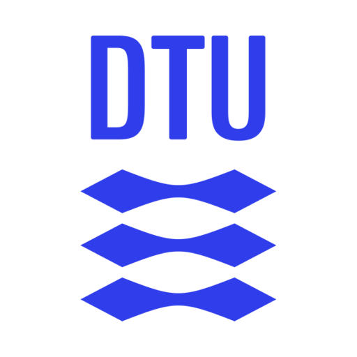

Find details about our research projects.
Nordic-SEC
Closing the Loop in Nordic TSO Coordination for Enhanced Grid Security and Cost Efficiency, 2026-2030
Nordic-SEC develops new coordination methods for Nordic transmission system operators and the Nordic Regional Coordination Centre to support the secure and cost-effective operation of a renewable-dominated power system. The project aims to improve cross-border coordination, uncertainty management, and decision-making across operational time frames, enabling more efficient use of shared grid infrastructure and facilitating the integration of renewable energy.
Our research focuses on the development of AI-enabled surrogate models and uncertainty-aware decision-support tools for coordinated system operation. In particular, we investigate how remedial action planning can incorporate dynamic security considerations, enabling operators to identify corrective actions that are both computationally efficient and reliable under uncertainty. The project will further develop reproducible validation frameworks to improve transparency and trust in future operational tools. This work is carried out in close collaboration with an Industrial PhD and Industrial Postdoc hosted jointly with Nordic RCC.
Project partners: DTU, Energinet and Nordic RCC

NU-ACTIS
Navigating Uncertainties: Advanced Control Solutions for Inverter-Dominated Power Systems, 2025-2028
NU-ACTIS addresses stability and control challenges in inverter-dominated power systems with high shares of renewable energy. The project develops advanced control, monitoring, and testing methodologies to mitigate inverter-driven instabilities and support the reliable integration of renewable energy sources.
At DTU, we develop AI-enabled control, system identification, and verification methods for inverter-based power systems. Our work focuses on trustworthy machine learning solutions that enhance system stability while providing transparency and performance guarantees for future grid operation.
Project partners: RISE Research Institutes of Sweden (Coordinator), DTU, Uppsala University, University College Dublin, Siemens Gamesa, and eRoots

ROADNET
Resilient Operation of Active Distribution Networks Dominated Power Systems, 2025-2028
ROADNET develops methods and tools for the resilient operation of future power systems dominated by active distribution networks and renewable energy resources. The project explores how distributed energy resources can contribute to power system stability and resilience through advanced modelling and distributed control strategies.
Our research focuses on developing dynamic equivalents and AI-based reduced-order models of active distribution networks. The associated PhD project investigates how heterogeneous resources such as electric vehicles, heat pumps, and distributed generation can be aggregated into scalable models that accurately represent distribution grid dynamics and flexibility for transmission system operation, stability assessment, and resilient control.

Developing AI-Based Dynamic Blackout Anticipation and Prevention Methods on a Digital Twin of Future Power Systems
2025-2028
In this project, we develop AI-enabled decision-support tools that help operators anticipate, assess, and mitigate disturbances in real time using digital twins of future power systems. The project aims to improve the resilience of renewable-dominated grids through dynamic security assessment and risk-informed operation.
The project is funded under the DTU Strategic Scholarship program.
Project partners: DTU Wind and DTU Compute
AI-Based Dynamic Equivalents for Fast Dynamic Simulations of Renewable Power Systems
2025-2028
In this project, machine learning-based dynamic equivalents that enable significantly faster simulation of renewable-dominated power systems while preserving the accuracy required for stability studies. The project addresses the growing computational challenges associated with inverter-based resources, active distribution networks, and large-scale uncertainty by creating next-generation surrogate models for time-domain and electromagnetic transient simulations.
The project is funded under the DTU Alliance Scholarship program.
Project partners: DTU and IIT Bombay

AI-EFFECT
Artificial Intelligence Experimentation Facility For the Energy sector
2025-2028
AI‑EFFECT establishes a European testing and experimentation facility for AI applications in energy systems. By combining digital platforms, laboratory infrastructures, and real-world use cases across Europe, the project develops standardized methods for testing, validating, and certifying AI solutions for trustworthy deployment in the energy sector.
DTU leads the Danish node and develops methodologies for explainability analysis, verification, simulation-based testing, and certification of AI solutions for multi-energy systems. Our work focuses on ensuring that AI tools for power and energy applications are trustworthy, transparent, robust, and compliant with emerging regulatory requirements.
AI-EFFECT is supported by the European Union’ss Horizon Europe programme under agreement 101172952.
Project partners: EPRI Europe, RWTH Aachen, DNV, DTU, INESC TEC, enliteAI, Fraunhofer FIT, Watt-IS, Bornholms Varme A/S, Center Denmark, Enel, TU Delft, CEVE, Maynooth University, IKIM, Hertie Schook, System X, E-Dsitribucion, TenneT TSO BV